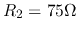
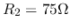
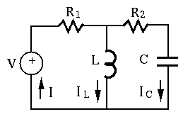
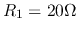

Next: About this document ...
Up: midterm1_bj17
Previous: Instruction (read this before
- Problem 1. (33 points)
Find all node voltages in the circuit, where
 ,
,
,
,  , ,
, ,  ,
,
 ,
,  . Use both node voltage and loop current methods.
. Use both node voltage and loop current methods.

- Problem 2. (33 points)
The components in the circuit below take the following values:
 ,
,  ,
,  , and . The voltage
source is
, and . The voltage
source is
 . Find the two branch currents
. Find the two branch currents
 ,
,  and the overall current
.
Also find the voltages
and the overall current
.
Also find the voltages  and
and  across
across  and
and  respectively.
respectively.

- Problem 3 (34 pts)
In the circuit below, ,
 ,
,  ,
,
 ,
,  . The circuit is at steady state before the switch is
turned from position 1 to position 2 at
. The circuit is at steady state before the switch is
turned from position 1 to position 2 at  . Find the three voltages
. Find the three voltages
 ,
,  and across ,
and across ,  and , respectively,
for
and , respectively,
for  (the bottom wire is treated as ground).
(the bottom wire is treated as ground).

Next: About this document ...
Up: midterm1_bj17
Previous: Instruction (read this before
Ruye Wang
2018-07-01